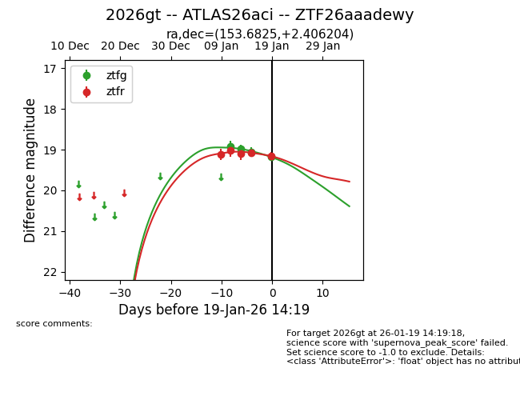
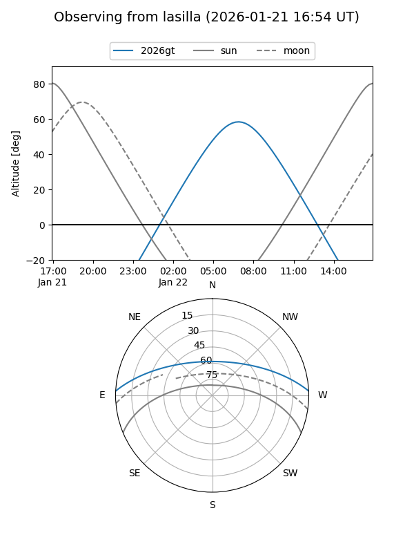
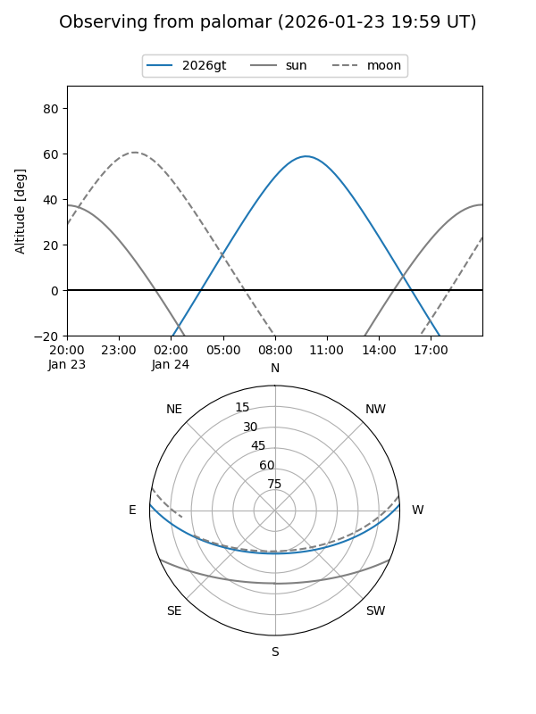
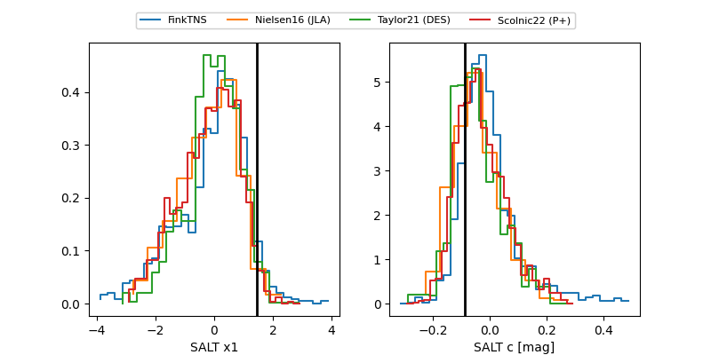

2026gt
Target 2026gt at 2026-01-18 13:30
Aliases and brokers:
FINK: link
Lasair: link
ALeRCE: link
TNS: link
YSE: link
alt names
ZTF26aaadewy (ztf,fink_ztf)
2026gt (tns,yse)
ATLAS26aci (atlas)
Coordinates:
equatorial (ra, dec) = 153.6825,+2.40620
equatorial (HMS+DMS) = 10:14:43.80,+02:24:22.33
galactic (l, b) = (239.5130,+45.10917)
Flags:
Photometry:
last ztfg=19.05, ztfr=19.07
3 ztfg, 4 ztfr detections
Lightcurve

Visibility


Additional plots
